Exercise 1¶
Statement¶
The partition table is an essential component of a computer system. Depending on whether it uses MBR or GPT, it is physically located in different sectors of the disk and controls the boot process. In digital forensic analysis, it is necessary to study its structure to ensure that the system is not infected by malicious programs, such as malware capable of replacing the MBR and loading malicious software into memory during the boot process.
Additionally, analyzing partition tables helps forensic investigators extract details about the disk, identify the file system type used by each partition, and determine their size. These analyses may also serve as digital evidence or even assist in recovering lost data. In any case, understanding the structure of both logical and physical storage media used to store information on a computer is essential.
Main Objectives of the Practice¶
Study MBR and GPT partition tables.
Software to Use¶
Windows X
WinHex
Sleuth Kit
dd
Tasks¶
Create a Windows virtual machine.
Download two hard disk images from the provided source.
Practice sector extraction commands for the sectors where partition tables reside.
Remember that commands differ slightly depending on the operating system. Examples:
# Linux
dd if=disk3.dd bs=512 skip=0 count=1 | xxd
:: Windows
dd count=1 bs=512 if=\\.\PHYSICALDRIVE2 of=d:\mbr.dd skip=0
Extract as much information as possible from the disk images:
1. Determine whether the partition table is MBR or GPT.¶
2. If it is MBR, determine the following for each partition:¶
a. Partition number
b. Boot indicator
c. Cylinder, Head, Sector (CHS) of the first sector in the partition
d. Partition type
e. Cylinder, Head, Sector (CHS) of the last sector in the partition
f. Logical Block Address (LBA) of the first sector
g. Partition length in sectors
3. If it is GPT, determine the following for each partition:¶
a. GPT header location (LBA)
b. Header size
c. First usable LBA
d. Last usable LBA
e. Disk GUID
f. Sector containing the partition table
g. For each partition:
Partition type
GUID
Starting LBA
Ending LBA
Name
4. Compare the information obtained manually with the output of forensic tools such as Sleuth Kit. Example:¶
mmls -t gpt|dos <disk>
Solution¶
Partition Table Analysis¶
For this practice, a Kali Linux virtual machine and the tool Active Disk Editor were used to manually inspect the disk images.
Disk 1¶
Determine whether the partition table is MBR or GPT¶
Open Active Disk Editor in your machine
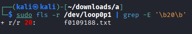
The following window will appear. Select “Open File…” and choose disk1.dd found in disks1.7z.
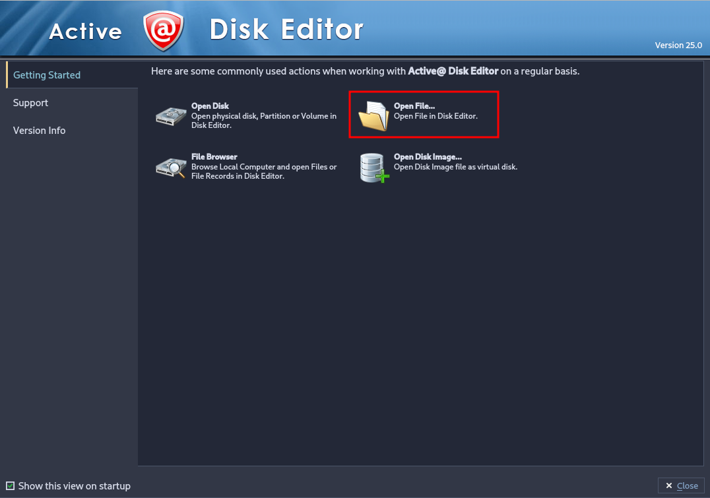
Once the file is loaded, a new disk will appear in the interface. Double click on it to open the explorer.
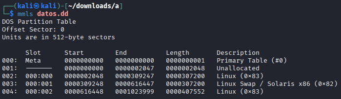
Change the template in order to start analyzing it correctly. To start with, as we don’t know the correct partition, select “Master Boot
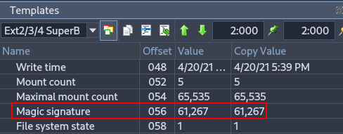
When trying to analyze the first disk, it is impossible to interpret it, if we attempt to read it as a standard MBR, the data shown will be meaningless or inconsistent.
 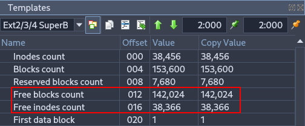
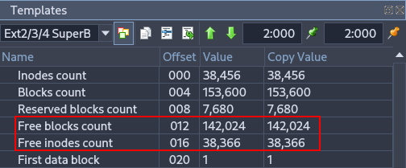
Try changing the template to “GUID Partition Table”.
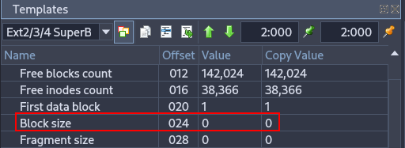
Once we select the GUID template, more colors appear in the application and the structure becomes clearer and more logical. Each color corresponds to a specific partition, helping with visual analysis.
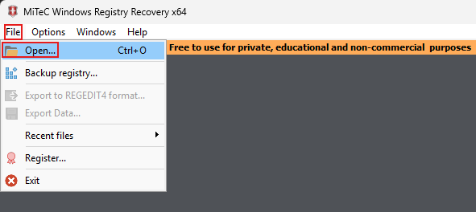 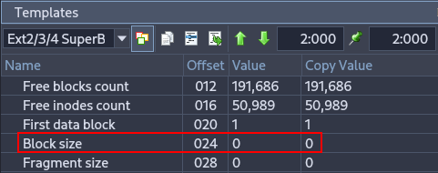
After analyzing the disk, we can conclude that it is a GPT disk.
GPT Header¶
From the header we can extract the following information:
Signature: EFI
Header size: 92 bytes
First usable LBA: 2048
Last usable LBA: 614,366
Disk GUID: D0 67 D7 5E 18 57 4D A4 88 B3 12 29 5A B5 5D 5E
Partition table location (LBA): 2
To analyze each partition, you must Ctrl + Left Click on the first LBA of the partition.
Then, assign the proper template in the right panel.
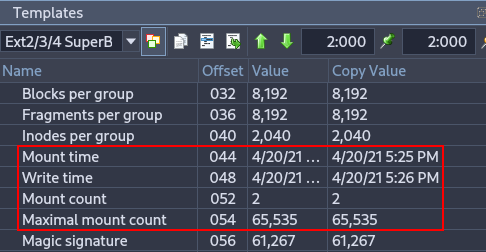
Partitions¶
First Partition¶
Type: Primary, hidden (contains partition table information)
GUID: 1C 40 E0 CE ED 42 4B 19 92 90 EC 39 77 3D E9 42
Starting LBA: 2,048
Ending LBA: 104,447
Name: EFI System Partition
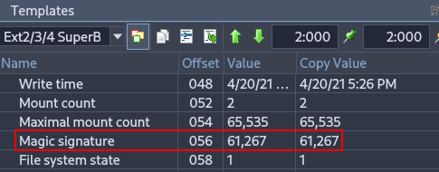
Second Partition¶
Type: Primary
GUID: E5 FA E0 91 62 C6 41 D1 8C 23 8C CF 50 32 B2 38
Starting LBA: 104,448
Ending LBA: 206,847
Name: Linux Swap Partition
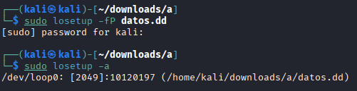
Third Partition¶
This partition appears to be corrupted.
Type: —
GUID: 6E 17 D6 40 85 30 43 15 98 52 1F C7 7E 01 57 B5
Starting LBA: 270,000
Ending LBA: 372,735
Name: —
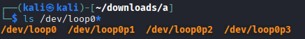
Fourth Partition¶
Type: Primary
GUID: 55 EF 48 65 C1 CA 4D 08 A3 F0 AC 68 AF C2 4A 76
Starting LBA: 372,736
Ending LBA: 475,135
Name: Basic Data Partition
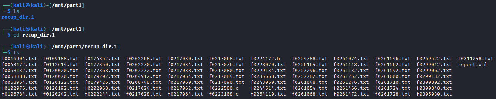
Fifth Partition¶
Type: Primary
GUID: F6 1B F4 D0 F8 F1 43 8E 9E E6 4A 30 01 3A 3F 28
Starting LBA: 475,136
Ending LBA: 614,366
Name: Basic Data Partition
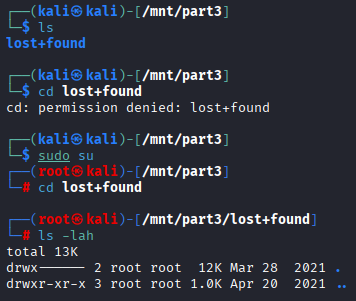
Sleuth Kit¶
To use Sleuth Kit, install it (on Kali it is usually installed by default):
sudo apt install sleuthkit
sudo mmls <disk_image>

The tool outputs information similar to what we obtained manually, including:
The same empty/corrupted third entry
An additional entry (partition number 10) marked as unknown
This matches with the manual findings.
Peculiarities Found¶
A strange partition was identified that contained no meaningful data, leading to the conclusion that it is corrupted.
The colored segmentation in Active Disk Editor also visually confirmed inconsistencies.
Disk 2 Analysis¶
Since the tools were previously explained, only the requested data is analyzed here.
Determine whether the partition table is MBR or GPT¶
Now, select disk2.dd found in disks1.7z.

Select “Master Boot Record” template again.
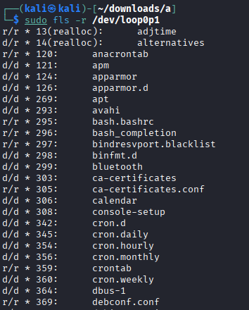
Inspecting the disk we can confirm that it is MBR by checking the first bytes of the disk.
MBR Header¶
Unlike GPT, MBR does not have a dedicated metadata header.
The partition table is located within the last 66 bytes of sector 0, containing four 16-byte entries.
Partitions¶
First Partition¶
Boot indicator: 00 (not active)
CHS (first sector): 32-21-0
Type: Primary
CHS (last sector): 172-2A-02
Starting LBA: 2,048
Length: 40,960 sectors
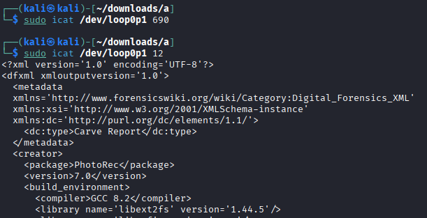
Second Partition¶
Boot indicator: 00 (not active)
CHS (first sector): 172-2B-02
Type: Primary
CHS (last sector): 57-34-05
Starting LBA: 43,008
Length: 40,960 sectors

Third Partition¶
Boot indicator: 00 (not active)
CHS (first sector): 57-35-05
Type: Primary — Extended, meaning it may contain logical partitions
CHS (last sector): 190-32-0C
Starting LBA: 83,968
Length: 120,832 sectors

Sleuth Kit¶
Using the same command:
sudo mmls <disk_image>
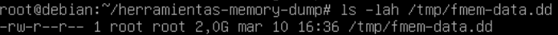
Additional logical volumes inside the extended partition were displayed, providing more detail than Active Disk Editor alone.
Peculiarities¶
Several areas contained incomplete or inconsistent data.
Sleuth Kit provided more detailed logical structure information than Active Disk Editor, particularly within the extended partition.
5. Comment on any peculiarities you find in the disks, such as:¶
Hidden partitions
Blank or unallocated data areas
Any other noteworthy structures